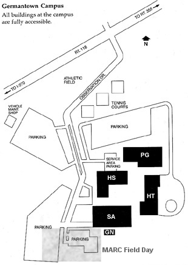

June 25 & 26, 2005

|
Click here
to see a PowerPoint presentation of MARC's 2005 Field Day activities.
|
|
|
MARC set up Field Day 2005 operations at the
Germantown Campus of Montgomery College on Saturday, June 25.
Operations commenced at noon and continued
for 24 hours until midday on June 26. |
|
|  | Directions from Rockville: Follow I-270 north and take the exit for MD-118 East (Germantown Road, exit 15A). Continue easterly for about 0.7 miles and turn right on Observation Drive. Follow Observation Drive all the way to the end in a parking lot near the "World Water Tower." |